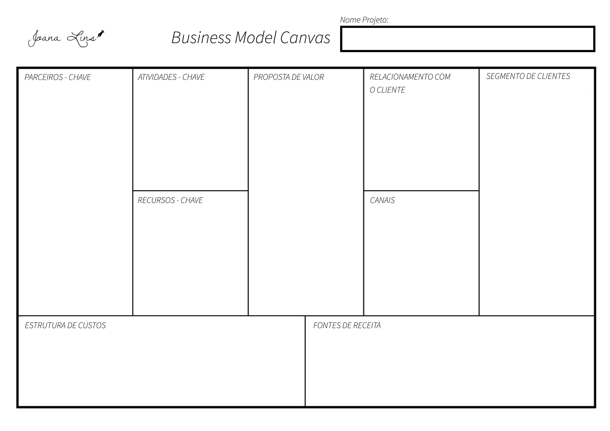

As melhores ferramentas para gerir e analisar seu negócio! [PARTE 1]
- 16:00
- 02/05/2017
Gerir o próprio negócio nunca foi tarefa fácil e ao contrário do que se parece, não tem experiência do mundo que a torne melhor. É sempre necessário estar planejando, analisando, se adaptando as novidades do mercado, criando, pivotando e trazendo constantes inovações para fidelizar clientes antigos ou conquistar novos, e não pensem que esse é todo o trabalho de um empreendedor, porque não falamos nem de metade ainda.
Pensando nisso e imaginando formas de como ajudar tanto no processo de entendimento de um negócio já existente como na criação de um novo, fiz uma lista de ferramentas de gestão que nos ajudam tanto a entender o funcionamento de uma empresa, como a entender o que pode ser feito para dar aquela alavancada que falta para tudo entrar nos eixos!
Vamos nesse primeiro momento entender um pouco mais sobre o Canvas, uma das ferramentas mais utilizadas atualmente!
1º. Business Model Canvas
O Canvas é uma ferramenta de gerenciamento estratégico que funciona como "resumão" da maior parte das informações que devem constar em um documento como o Plano de Negócios, por exemplo, e é utilizado tanto na criação de novos negócios, como também no processo de recriação e inovação de uma empresa. Seus maiores diferenciais são a forma sistemática como todas as informações são organizadas, já que o mesmo é preenchido como um mapa visual, ou seja, tudo está ali, basta você ver; e o poder de ter um processo de cocriação (criação colaborativa) que faz com que seja envolvido em seu preenchimento todos os interessados no projeto.
Ele é formado pelos principais itens constituintes de uma empresa e ao contrário de documentos formais não deve ser preenchido a partir do início, mas sim pelo meio. Calma, não é loucura, vamos a explicação!
A ferramenta propõe para o empreendedor a resposta de quatro perguntas que funcionam como pilares essenciais de uma empresa: "Como, O que, Para quem e Quanto", fazendo com que a partir delas sejam analisados nove pontos que dizem muito a respeito das decisões que serão tomadas futuramente, podendo ser alteradas quantas vezes forem necessárias independente de qual estágio de funcionamento a instituição esteja.
A primeira parte do quadro a ser respondida é a que abrange a oferta do negócio ou “O que” será oferecido ao cliente, a está parte damos o nome de Proposta de Valor. É nesse momento que será deixado claro o que de valor seu produto ou serviço irá oferecer ao seu público alvo e quais são os benefícios que seu negócio oferecerá.
A segunda parte a ser preenchida é a que se refere aos clientes, também chamada de "Para quem" e que é constituída por três itens: Segmentos de clientes, Canais e Relacionamentos.
Em Segmentos de Clientes é necessário deixarmos claro qual é o público alvo do seu negócio naquele momento. É interessante lembrarmos que o público alvo pode ser alterado de acordo com a atualização e as mudanças aplicadas na empresa com o decorrer do tempo, por isso, sempre que falarmos dele precisamos deixar bem delimitado a classe de clientes que interessam a sua empresa. Generalizar nesse caso nunca é uma boa opção!
Em Canais, trabalharemos quais canais de comunicação estreitarão a relação Cliente x Empresa. No momento da escolha de quais canais utilizar, é necessário pensar em questões como: Onde seu público alvo está? Vale a pena investir em comunicação através da internet ou é melhor investir em propagandas televisivas, por exemplo? É nesse ponto que também devem ser analisadas as estratégias de marketing que estão sendo utilizadas por seu negócio!
Em Relacionamentos, será analisada a relação entre o cliente com sua empresa. A esse tipo de processo, dá-se o nome de Customer Relationship Management (CRM, ou em português Gestão de Relacionamento com o Cliente) que é estratégia de negócios que você utilizará para manter seu relacionamento com seu público-alvo.
A terceira parte do mapa visual é representada pela sessão de Finanças, ou do que chamamos de "Quanto" e possui dois pontos a serem respondidos: "Qual sua fonte de receita e Qual sua estrutura de custos", porém, nesse momento é interessante ser respondido somente sobre as Fontes de Receita, visto que para entender quanto será gasto no projeto será antes necessário analisar como será implantada sua ideia no mercado.
Em Fontes de Receitas, será analisada quais as melhores formas de monetização para que não haja prejuízo na venda do produto ou serviço, assim como para que ele possua um preço de acordo com o que o mercado já oferece.
Após respondermos a primeira parte da sessão "Quanto", começaremos a entender "Como" o projeto será retirado do papel. A sessão “Como” conta com três pontos: Atividades-chave, Recursos-chave e Parceiros-chave.
As Atividades-chave representam a parte do “BOTA PRA FAZER”, visto que é através das decisões tomadas nela que veremos os resultados obtidos na entrega da Proposta de Valor.
Em Recursos-chave será descrito todos os recursos que serão necessários para que seja gerado o valor apresentado ao seu cliente. E os Parceiros-chave delimitam quais pessoas, empresas, ONGs ou Institutos podem fazer parte da sua rede de parceiros, ajudando assim no crescimento do seu negócio.
No fim desta etapa e já tendo definido informações como Recursos-chave, pode-se por fim definir a Estrutura de custo do seu projeto, parte final da etapa “Quanto”, que é a descrição de tudo que será utilizado para a realização da proposta, mas que entrará no projeto como investimento, ou seja, como custos financeiros. Nessa etapa é necessário analisar custo com mão de obra, matéria prima, pesquisa, marketing e todos os outros investimentos!
Gostou do Canvas e quer começar a aplicar na sua empresa? Faça aqui o Download de um modelo prontinho para você usar e tente fazer com sua equipe. Uma dica valiosa é utilizar post-its para o preenchimento dele, assim quando alguma coisa mudar você pode simplesmente trocar o post-it e não faz nenhum baguncinha em seu Plan! Baixe também um Infográfico com o resumo do que é cada detalhe do Canvas!
Lembre-se de compartilhar esse artigo com seus amigos nas suas redes sociais e de assinar nossa Newslatter para receber mais informações!

Sobre a autora
Escritora, empreendedora e criadora do projeto "Vamos mudar o mundo", tem como missão propagar a Educação Empreendedora através de palestras e produção de conteúdo.


{kind=link}
{kind=link}